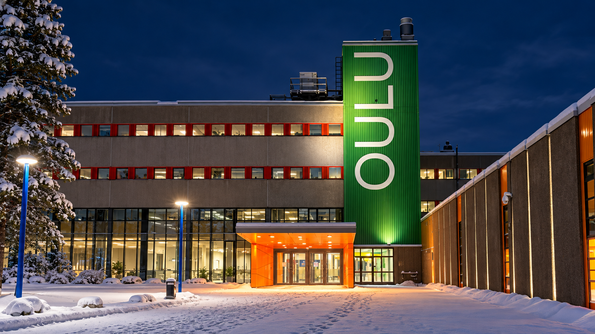

University of Oulu · Finland
Applied Quantum Computing Winter School 2027
15–19 March 2027
Five intensive days across the quantum computing stack, combining expert lectures, hands-on sessions, participant talks, and direct engagement with academia and industry.
About the event
A practical winter school for the next quantum workforce
The Applied Quantum Computing Winter School is a five-day intensive programme designed for PhD researchers and advanced Master’s students. It is organised by QDOC doctoral researchers at the University of Oulu under the supervision of Professor Matti Silveri.
The school covers the full quantum computing stack, from hardware and control to open quantum systems, algorithms, applications, and the wider quantum ecosystem. Participants will gain practical experience running quantum circuits and connect directly with researchers and industry professionals.

Core themes
Topics
Control Layer
Open Quantum Systems
Algorithms & Applications
Careers & Quantum Ecosystem
Audience
Who should attend?
PhD Researchers
Early-career scientists working toward roles in quantum labs, companies, and research institutes.
Master’s Students
Advanced students in physics, computer science, engineering, and related disciplines entering the quantum workforce.
International Lecturers
Invited lecturers and experts from across Europe.

Venue & format
Hosted at the University of Oulu
The winter school will take place at the University of Oulu, combining focused lectures, collaborative discussion, and practical sessions in a welcoming academic setting.
- Five days of intensive learning
- 2–3 hour expert lectures
- 15-minute participant flash talks with a best-talk prize
- Poster presentations with a best-poster prize
- Two hands-on quantum circuit sessions

Contact
See you in Oulu
University of Oulu
Pentti Kaiteran katu 1
90570 Oulu, Finland